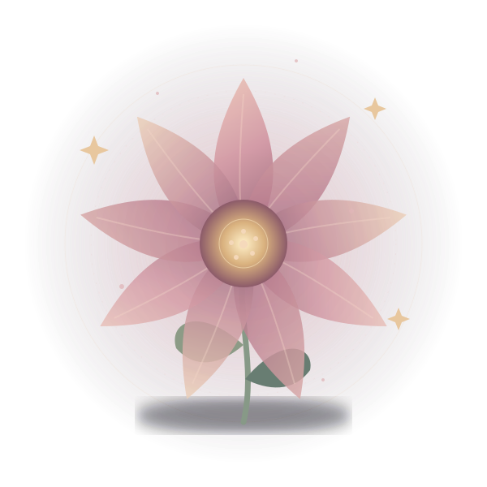

A PRIVATE LITTLE UNIVERSE THE MAHI EDITION · 2026
আজ পৃথিবীটা একটু তোমার মতো সুন্দর।
For the girl
who makes
life bloom.
একটি দিন, সাতটি ছোট্ট জগৎ, আর তোমার জন্য জমিয়ে রাখা অসংখ্য শুভকামনা। ধীরে ধীরে খোলো—এই গল্পের প্রতিটি মুহূর্ত শুধু তোমার।
MADE SLOWLY. GIVEN WITH CARE.
FIG. 01 — THE FIRST BLOOM
for your universe.
GROW WITH GRACEYOU ARE THE MOMENT

A little lightfor your universe.
SCROLL TO BEGIN↓01 — 07
A NOTE BEFORE WE BEGINEST. WITH LOVE · 01/07
Some days deserve
their own universe.
এই উপহারটা শুধু একটি ওয়েবসাইট নয়। এটা তোমার জন্য সাজানো ছোট্ট এক যাত্রা—যেখানে কখনো আকাশে ইচ্ছে ভাসবে, কখনো চিঠির ভাঁজে কথা লুকোবে, আর শেষে অপেক্ষা করবে একটুখানি জাদু।
প্রথম অধ্যায় শুরু করো ↗07UNIQUE MOMENTS
∞GOOD WISHES
01VERY SPECIAL YOU